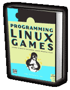

#endim# #begintitle# Programming Linux Games #endtitle# #begintext# Learn it All! Get the definitive guide to writing clean, portable games on Unix from the Loki master, John "overcode" Hall. Softcover.In Programming Linux Games Hall imparts a good bit of the Loki know-how that has brought you some of the biggest blockbuster games to the Linux platform.
Here one will learn how to use the same state-of-the-art, cross-platform Open Source tools that the pros do: SDL, OpenAL™, SMPEG and more! Plus a tiny bit of the Loki special sauce. #endtext# #beginform##formid##endform##pricetxt##endtd# #endtable#